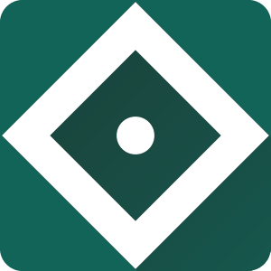
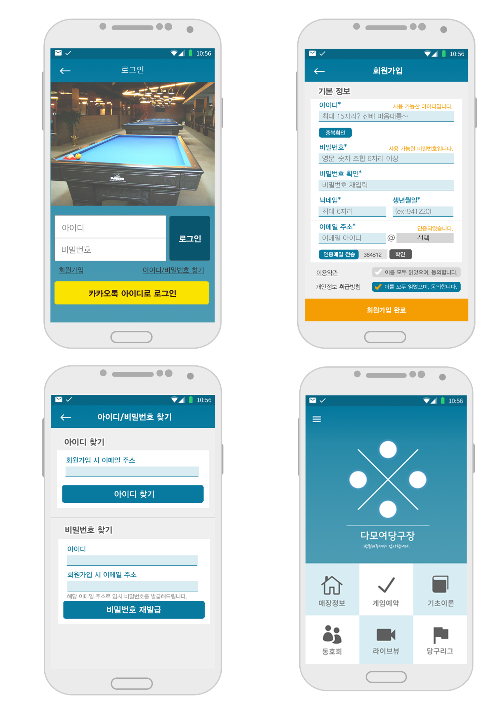
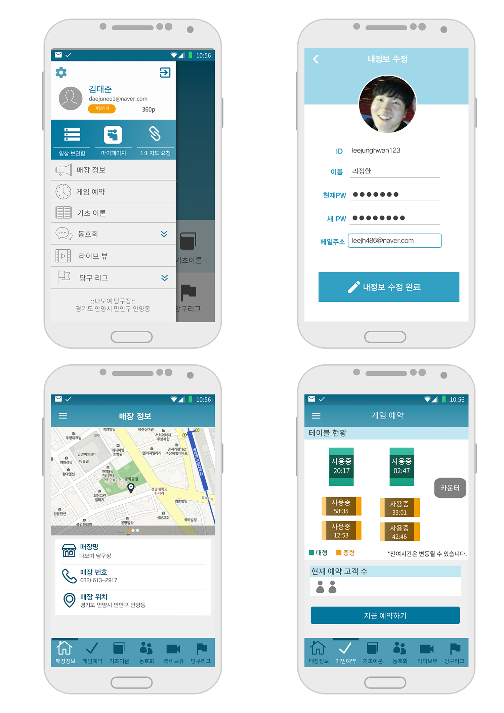
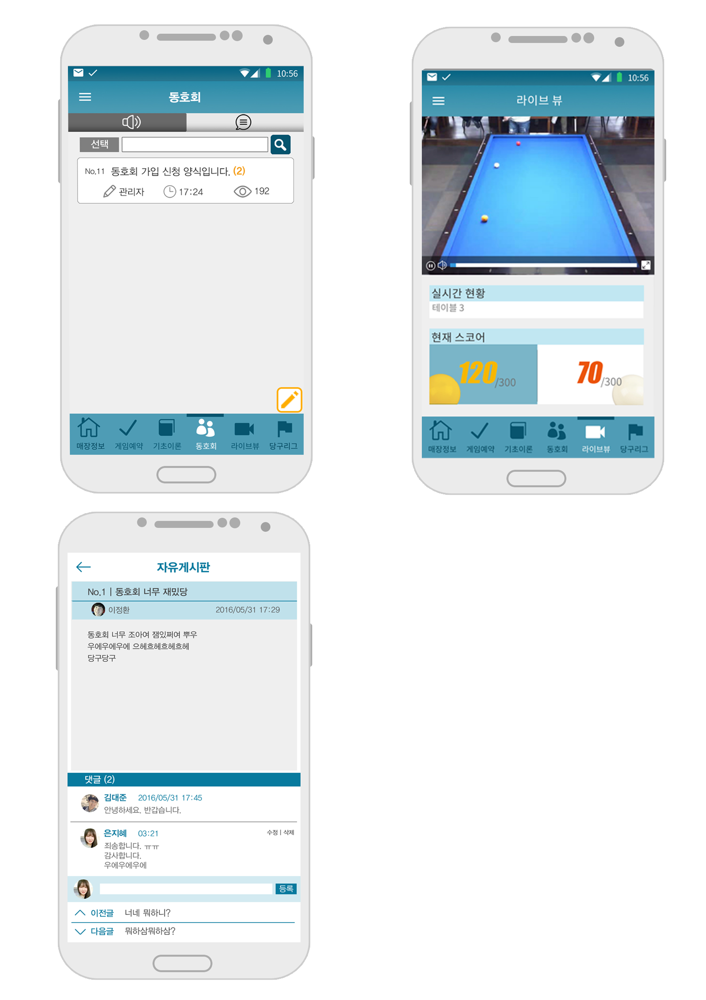

소상공인을 위한 SW 동아리 재능기부 챌린지인 '어울림' 출품작으로,
실시간 당구 스트리밍이 가능한 당구 동호회 커뮤니티 어플리케이션인 '다모여 당구장'입니다.
2016년 교내 컴퓨터공학부 설계경진대회에서 최우수상을 받았으며,
미래창조과학부 ICT인재 양성사업인 한이음을 통해 구현하기도 했습니다.
여기서 저는 어플리케이션 디자인 업무를 맡아, 개발자들과 협업하며
실제 어플리케이션을 구현하기 위한 화면 설계 및 디자인,
아이콘, 로고 등 이미지 제작과 발표용 PPT 제작, 문서정리 등의 업무를 하였습니다.
LOGO

당구대의 일반적인 색인 초록색 바탕에
당구대를 의미하는 사각형과 당구공을 의미하는 원점을 넣어
당구장의 이미지를 함축시켰습니다.
또한, 사각형을 45도 기울여 '눈'의 이미지와도 비슷하게 하여서
원격으로도 실시간 스트리밍을 통해 '볼 수 있다'는 의미도 내포하였습니다.
COLOR
'다모여 당구장' 어플리케이션의 클라이언트는
대학로와 주거지 사이에 위치하여 고객 연령대의 폭이 넓은 편입니다.
따라서 다양한 연령대에게 맞출 수 있도록, 차분한 남색을 주 컬러로 잡았습니다.
DESIGN



FONT